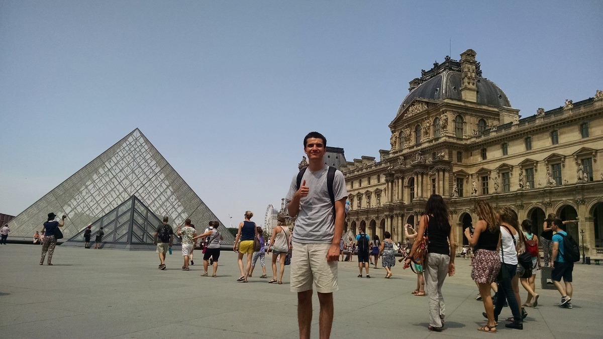

Map links
Kentucky Population: Link
Sally Brown Crutcher Park: Link
Kentucky Springs: Link
Kentucky Waterways: Link
Central Kentucky Waterways: Link
Authored by: Ethan Russell
Join me on a journey of Cartography. Prepare to be immersed by high quality maps of the beautiful State of Kentucky.